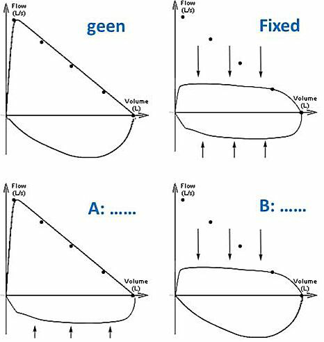

Al je antwoorden worden gewist en je begint opnieuw. Weet je het zeker?
Jouw resultaten
Arts en Patiënt 3 · 2e Toetsmoment 2020‑2021
—
/ 41
0
Goed
0
Fout
0
Niet beantwoord
Vraag 1
Casus Hoesten. Een 48-jarige man komt bij de huisarts in verband met kortademigheid, die nu een paar maanden bestaat. De klachten zijn geleidelijk erger geworden, maar vielen pas echt op tijdens de fietsvakantie deze zomer. Patiënt heeft regelmatig hoestbuien, met name 's nachts. Patiënt had als kind astma en hooikoorts, maar was daar "overheen gegroeid". Hij heeft regelmatig last van maagzuur. Hij gebruikt geen medicatie. Hij rookt sinds zijn 16e jaar 1 pakje sigaretten per dag. Zijn moeder had reumatoïde artritis en diabetes mellitus type 2 en zijn oma en tante hebben astma. De verdere familieanamnese is blanco. Over de longen hoort de huisarts een licht piepend verlengd expirium.
De huisarts denkt aan astma of COPD. Noem voor elk ziektebeeld twee argumenten uit de casus die specifiek voor dat ziektebeeld pleiten.
Modelantwoord
Voor astma pleit: voorgeschiedenis van hooikoorts en astma, nachtelijk hoesten.
Voor COPD pleit: leeftijd, aantal PY, geleidelijke begin klachten (niet aanvalsgewijs).
Fout: oma en tante met astma (geen eerstegraads familielid), het longgeluid (differentieert niet tussen de 2 diagnosen).
Voor elk goed argument 0,5 punt
Vraag 2
De huisarts laat een spirometrie verrichten en de uitslag pleit sterk voor de diagnose astma. Welk beeld ziet de huisarts?
Vraag 3
De benauwdheidsklachten verbeteren na starten met inhalatiemedicatie. De nachtelijke hoestbuien worden daarentegen steeds erger. Noem de twee meest waarschijnlijke oorzaken bij deze patiënt (andere dan astma).
Modelantwoord
Post nasal drip in de nacht bij (allergische) rhinosinusitis
Gastro-oesofagale reflux
Voor elk goed antwoord 1 punt, max 2
Vraag 4
Op een gegeven moment krijgt hij klachten van veel hoesten en piepen specifiek op het werk. Een diagnose van beroepsastma is uitgesloten als:
Vraag 5
Zowel bij astma als bij COPD kan er sprake zijn van een ernstige luchtwegobstructie. Met pursed lip breathing kan een patiënt met COPD de obstructie verlichten, terwijl dit bij een astma patiënt meestal niet helpt. Wat is het effect van pursed lip breathing op de ademhaling en waarom helpt het bij COPD wél en bij astma niet?
Modelantwoord
Pursed lip breathing verhoogt de eindexpiratoire druk, waardoor luchtwegcollaps tijdens de uitademing wordt voorkomen (1 punt). De luchtwegobstructie bij COPD is onder andere het gevolg van collaps van de luchtwegen bij expiratie door een verlies aan elasticiteit (1 punt). De luchtwegobstructie bij astma is het gevolg van zwelling van het luchtwegslijmvlies, slijmvorming en bronchospasme, waardoor luchtwegcollaps bij astma nauwelijks een rol speelt (1 punt) en daarom is pursed lip breathing niet effectief.
Vraag 6
Casus Dyspnoe. Een 80-jarige man is bekend met hartfalen, COPD en een CVA (cerebrovasculair accident). Hij komt ter controle bij de longarts. Vorig jaar werd een diagnose gesteld van COPD, met een FEV1 van 40% van voorspeld (GOLD 3). Ondanks behandeling met alle soorten kortwerkende luchtwegverwijders houdt hij bij inspanning veel last van dyspnoe. Hij maakt jaarlijks één ernstige exacerbatie door. Hij rookt 12 sigaretten per dag.
Welke interventie is de belangrijkste stap in de behandeling van de COPD?
Vraag 7
Casus Dyspnoe (vervolg). De longarts past vanwege de klachten de medicatie aan.
Welke inhalatiemedicatie is nu aangewezen? Noem er één.
Modelantwoord
Langwerkend betamimeticum of langwerkend parasympathicolyticum (1 punt).
Fout: inhalatie corticosteroïd gezien lage exacerbatie frequentie.
Vraag 8
Casus Dyspnoe (vervolg). De longarts doet een spirometrie waarop te zien is dat de vitale capaciteit (VC) fors is gedaald en dat de Tiffeneau index is gestegen. De bodybox laat zien dat er ook sprake is van een afname van de totale longcapaciteit (TLC). De VC is met 1,0 liter afgenomen, terwijl de TLC met 1,5 liter is afgenomen.
Welke parameter is door dit gegeven eveneens afgenomen? Noem deze parameter.
Modelantwoord
Er moet sprake zijn van een afname van het residuaal volume (RV) = 1 punt
Vraag 9
Casus Dyspnoe (vervolg). Een paar maanden later wordt hij verkouden. De sputumproductie neemt toe en hij verslikt zich regelmatig door het vele hoesten. Hij krijgt op een gegeven moment koorts en wordt toenemend kortademig. De PCR op COVID-19 is negatief.
De huisarts concludeert dat er sprake is van een acute exacerbatie van COPD en een aspiratie pneumonie en voegt medicatie toe aan zijn inhalatiemedicatie. Welke twee orale medicamenten zijn geïndiceerd?
Modelantwoord
Prednison/prednisolon (1 punt) en Amoxicilline met claviculaanzuur/Augmentin (1 punt)
Vraag 10
Casus Dyspnoe (vervolg). De volgende dag belt zijn vrouw, hij is in de nacht erg verslechterd. Hij wordt door zijn huisarts verwezen naar de spoedeisende hulp van het ziekenhuis. Een arteriële bloedgasanalyse toont de volgende waardes: pH 7.20, PaO2 8,3 kPa, PaCO2 8 kPa, HCO3- 40 mmol/L.
Van welke zuur-base verstoring is hier sprake?
Vraag 11
Welke van de vier onderstaande ziektebeelden heeft geen relatie met roken?
Vraag 12
Casus COVID-19. Een man van 52 jaar werkt als docent op een middelbare school en onlangs zijn er vier leerlingen besmet geraakt met SARS-CoV-2. Momenteel heeft hij geen klachten. Hij heeft een voorgeschiedenis van chronische nierinsufficiëntie, artrose van de knie en hypertensie. Zeven jaar geleden maakte hij een trombosebeen door, net als z'n moeder. Hij gebruikt paracetamol en enalapril (ACE-remmer). Hij rookt ongeveer 20 sigaretten per dag en gebruikt geen alcohol.
Noem drie aspecten in de anamnese en voorgeschiedenis die erop duiden dat hij bij een besmetting een verhoogd risico heeft op een ernstig verlopende COVID-19 pneumonie.
Casus COVID-19 (vervolg). Na twee weken vakantie te hebben gehad gaat hij weer aan het werk, waar inmiddels meer leerlingen en docenten met SARS-CoV-2 besmet zijn geraakt. Na zijn eerste werkdag krijgt hij symptomen van anosmie en hoesten. In overleg met zijn leidinggevende blijft hij thuis in afwachting van de testuitslag. "Je kunt dit virus nooit op het werk opgelopen hebben", meent zijn leidinggevende.
Klopt de opmerking van zijn leidinggevende?
Vraag 14
Casus COVID-19 (vervolg). De PCR test is positief en hij wordt zieker. Hij heeft last van thoracale pijn, hoest met bloedbijmenging, is extreem vermoeid en heeft koorts. Na een week op bed te hebben gelegen ontwikkelt hij een rood dik been. Hij meldt zich via de huisarts op de spoedeisende hulp van het ziekenhuis. Hij heeft een temperatuur van 39˚C, een pols van 98 slagen per minuut, een ademfrequentie van 32x/min en een perifere saturatie van 90%. De arts wil de gangbare beslisregels voor de diagnostiek van veneuze trombo-embolie toepassen, al realiseert zij zich dat deze niet gevalideerd zijn ten tijde van COVID-19.
Welke vier bevindingen uit de (eerdere) anamnese en lichamelijk onderzoek in deze casus, dragen bij aan een hoge Wells-score (zoals beschreven in "Diagnostiek voor alledaagse klachten")?
Modelantwoord
De bedlegerigheid/immobilisatie
Klinische tekenen van een trombosebeen
DVT in voorgeschiedenis
Hemoptoe
Fout: pols (< 100), DVT bij moeder
0.5 per goed antwoord
Vraag 15
Casus COVID-19 (vervolg). De arts overweegt welk aanvullend onderzoek nu zinvol is bij deze patiënt met een hoge klinische verdenking op veneuze trombo-embolie.
Welk aanvullend onderzoek draagt op dit moment het minste bij aan de diagnostiek naar veneuze trombo-embolie?
Vraag 16
Casus COVID-19 (vervolg). Er zijn inderdaad longembolieën en behandeling met antistolling wordt gestart. Om een inschatting te kunnen maken van de klinische ernst wordt een arteriële bloedgas afgenomen: pH 7.30, PaO2 7 kPa, PaCO2 3.5 kPa, HCO3- 18 mmol/L.
Van welke verstoring van het zuur-base evenwicht is hier sprake?
Vraag 17
Casus COVID-19 (vervolg). Bij deze patiënt met longembolieën én een COVID-19 pneumonie bestaat een uitgesproken hypoxemie.
Wat is de meest waarschijnlijke verklaring voor de hypoxemie?
Vraag 18
Casus Pulmonale hypertensie. Een vrouw van 38 jaar heeft taaislijmvliesziekte (Cystic Fibrosis). Ze ondergaat een rechtskatheterisatie in het kader van screening voor een longtransplantatie. Er wordt pulmonale hypertensie vastgesteld: mPAP 40 mmHg, mPCWP 10 mmHg, CO 5 l/min.
Gaat het hier om een pre- of postcapillaire pulmonale hypertensie en om welke groep (1 t/m 5) gaat het?
Modelantwoord
Precapillaire PH (1 punt) PH in het kader van een chronische longziekte/hypoxie: groep 3 (1 punt)
Vraag 19
Als een proefpersoon na het uitademen van zijn/haar teug (tidal) volume, zo diep mogelijk verder uitademt noemen we dit uitgeademde volume:
Vraag 20
Kies de juiste alternatieven.
Bij de start van een inspanning is de verhouding van de verbranding van vetten t.o.v. koolhydraten 60 - 40. Naarmate de inspanning voortduurt zal het respiratoir quotiënt (VCO2/VO2) doordat er meer als substraat voor de ATP-voorziening gebruikt gaan worden.
Vraag 21
Een patiënt heeft een keelontsteking waardoor de diameter van de trachea 2 keer zo klein geworden is. Wat heeft dit voor consequenties voor de flow van de lucht in de trachea volgens de wet van Poiseuille en de formule Flow = ∆P/R?
Vraag 22

Kies de juiste alternatieven.
In de figuur hierboven zijn flow-volume curves getekend. Linksboven de curve van een controlepersoon zonder obstructies (geen), rechtsboven die van een patiënt met een gefixeerde obstructie (Fixed). A en B zijn de flow-volume curves van patiënten met variabele obstructies. Flow-volume curve A is die van een patiënt met een variabele thoracale obstructie en heeft dus problemen met .
Vraag 23
Casus Cardiaal of pulmonaal. De huisarts gaat op visite bij een vrouw van 72 jaar. Haar voorgeschiedenis vermeldt COPD (GOLD 2), hypertensie, paroxysmaal atriumfibrilleren en hartfalen. Roken: 40 Pack Years. Ze is al een paar dagen toenemend benauwd, vooral bij inspanning. Verder hoest ze meer dan normaal en nu ook met groen sputum, met af en toe bloedbijmenging. De huisarts ziet een matig zieke, dyspnoeische vrouw met een ademfrequentie van 26/min, die haar hulpademhalingsspieren gebruikt. De saturatie is 90%. Haar bloeddruk is 135/90 mmHg met een pols van 78/min irregulair, de temperatuur is 37.9˚C. Over de longen hoort zij een verlengd piepend expirium zonder andere bijgeluiden. Ze heeft geen oedeem aan de enkels.
Welke bevindingen in deze casus zijn alarmsymptomen? Kies de twee juiste antwoorden.
Meerdere antwoorden mogelijk.
Vraag 24
Gezien haar voorgeschiedenis overweegt de huisarts een exacerbatie COPD en hartfalen als mogelijke oorzaken. Wat is op basis van de anamnese en het lichamelijk onderzoek de meest waarschijnlijke diagnose? Onderbouw dit met twee argumenten aan de hand van de casus.
Modelantwoord
Exacerbatie COPD o.b.v. een luchtweginfectie (1 punt): vanwege de toename van de productieve hoest met groen sputum en bloedbijmenging (1 punt)
Hartfalen minder waarschijnlijk vanwege de afwezigheid van perifeer oedeem en crepitaties (1 punt)
Vraag 25
Casus Cardiaal of pulmonaal (vervolg). Stel, dat de huisarts denkt aan hartfalen als oorzaak, dan kan bepaald aanvullend onderzoek behulpzaam zijn om hartfalen aan te tonen of uit te sluiten. Ze heeft hierover een gesprek met de huisarts in opleiding.
De huisarts in opleiding geeft in dit gesprek aan dat een volstrekt normaal ECG hartfalen vrijwel uitsluit, klopt dat?
Vraag 26
Casus Cardiaal of pulmonaal (vervolg). (Vervolg van vraag 25.) Ze bespreken het aanvullend onderzoek om hartfalen aan te tonen of uit te sluiten.
Ook geeft de huisarts in opleiding aan dat een normale X-thorax hartfalen vrijwel uitsluit, klopt dat?
Vraag 27
Wanneer een patiënt op het spreekuur komt bij de huisarts met bijvoorbeeld de klacht moeheid is het belangrijk om naast de tractus anamnese ook een deel van de psychosociale anamnese af te nemen. Welke doelen dient de psychosociale anamnese hierin? Noem twee verschillende doelen.
Modelantwoord
Het kunnen plaatsen van de klachten in een context
De differentiaal diagnose kunnen nuanceren
Het hulpaanbod aanpassen aan de psychosociale omstandigheden
Het verkrijgen van inzicht in de subjectieve betekenis van de klacht
Voldoende aanknopingspunten vinden voor een adequate verwijzing naar of consultatie van psychosociale disciplines
Vraag 28
Hieronder staan drie diagnoses genoemd die moeheid kunnen veroorzaken. Hoe vaak zijn deze diagnoses de oorzaak van moeheid in de huisartsenpraktijk? Kies bij elke diagnose de juiste frequentie.
werkproblemen
decompensatio cordis
hypothyreoïdie
Vraag 29
Casus Moeheid. Een 35-jarige man met blanco voorgeschiedenis komt op het spreekuur in verband met vermoeidheid. Hij is 3 maanden geleden vader geworden waar hij erg van geniet. Hij heeft gebroken nachten doordat zijn dochtertje de nachten niet doorslaapt. Sporadisch loopt hij hard terwijl hij dit voorheen twee keer per week deed. Qua conditie lukt dit hardlopen wel. Hij is in 4 maanden tijd – onbedoeld – vijf kilogram afgevallen. Ondanks dat hij een dag minder is gaan werken maakt hij bijna evenveel uren doordat het corona-thuiswerken bij hem leidt tot minder efficiënt kunnen werken.
In deze casus zijn er zowel aanwijzingen dat er sprake kan zijn van een fysiologische als een somatische (pathologische) oorzaak van de vermoeidheid. Noem voor beide één aanwijzing.
Modelantwoord
Fysiologische oorzaak;
Verstoorde slaap
Overwerk
Somatische oorzaak;
Onbedoeld gewichtsverlies
Voor elk goed antwoord 1 punt, max 2
Vraag 30
Casus Moeheid (vervolg). De verdere tractusanamnese is niet bijdragend. De huisarts verricht lichamelijk onderzoek. Hij ziet een verzorgde niet zieke man met een normaal geschat BMI. Bloeddruk 125/85 mmHg, pols 70/min regulair. Over hart, longen en abdomen geen afwijkingen en geen lymfeklieren palpabel. De huisarts doet bloedonderzoek.
Welke bepalingen zijn dit, zoals beschreven in "Diagnostiek voor alledaagse klachten"? Noem er drie. Leg bij elke bepaling uit welke oorzaak van moeheid getest wordt.
Modelantwoord
Hb, TSH/T4, glucose, BSE, Leukocyten(differentiatie), ALAT
BSE/CRP, kan verhoogd zijn bij chronische infectie of maligniteit
Hb, verlaagd bij anemie
TSH/T4 in verband met mogelijke hypothyreoïdie (en/of hyperthyreoidie) (T4 alleen is geen juist antwoord, TSH alleen wordt wel goed gerekend),
Glucose vanwege mogelijke diabetes mellitus
ALAT bij vermoeden leverpathologie
Leukocyten(differentiatie) in verband met ontsteking (verhoogd) en maligniteit (verhoogd of verlaagd bij bijvoorbeeld afwijkende rijping).
Fout: Creatinine/GFR, namelijk alleen bij ouderen
0.5 punt per goede bepaling en 0.5 punt per goede toepassing
Vraag 31
Casus Luchtweginfectie. Op uw spreekuur als huisarts ziet u een vrouw van 69 jaar. Zij is bekend met hypertensie, diabetes mellitus type 2 en een allergie voor penicilline. Ze komt omdat ze drie dagen last heeft van benauwdheid, hoesten met gelig sputum en koorts. Bij lichamelijk onderzoek ziet de huisarts een zieke vrouw met een ademhalingsfrequentie van 24/min, saturatie van 95%, een bloeddruk van 110/70 mmHg en een regulaire pols van 90/min. De temperatuur is 39.1˚C. Bij auscultatie van de longen hoort de huisarts normaal ademgeruis beiderzijds, met rechts basaal crepitaties.
De huisarts volgt in haar beleid de NHG-standaard acuut hoesten. Is het afnemen van een CRP nu geïndiceerd? Beargumenteer kort je antwoord.
Modelantwoord
Nee (1 punt), de CRP wordt ingezet bij de matig zieke patiënt waarbij het klinisch beeld geen uitsluitsel geeft. Dit klinisch beeld duidt op een pneumonie. (1 punt)
Vraag 32
Casus Luchtweginfectie (vervolg). De huisarts schrijft antibiotica voor.
Welk antibioticum is het middel van eerste keus bij deze patiënt en waarom?
Modelantwoord
Doxycycline (1 punt) vanwege een allergie voor penicilline (en dus voor amoxicilline) (1 punt)
Vraag 33
Casus Zorgethiek en diversiteit. Een vrouw met een Hindoestaans-Surinaamse achtergrond heeft zo een afspraak met haar cardioloog. Ze maakt zich zorgen. Ze heeft gehoord dat sommige medicijnen tegen hoge bloeddruk minder goed werken bij mensen van kleur. Ze vraagt zich af of de cardioloog hier wel voldoende van af weet. Tijdens het consult blijkt de cardioloog zelf een Surinaamse achtergrond te hebben. Mevrouw is meteen meer op haar gemak en ook heeft ze er vertrouwen in dat deze dokter veel weet van hartproblemen bij donkere mensen. Als ze thuis komt, vertelt ze haar zoon van 13 die arts wil worden over haar cardioloog. Dat hij haar begreep, haar niet het gevoel gaf dat ze onnozele vragen stelde, en dat ze niet hoefde te bewijzen dat ze goed is opgeleid. Bij eerder contact met dokters was dit vaak wel zo, en voelde ze zich vaak dom als ze de spreekkamer uitliep.
Leg de drie niveaus van in- en uitsluiting binnen de gezondheidszorg uit, en beschrijf voor ieder niveau op welke manier in- en uitsluiting in deze casus voorkomt.
Modelantwoord
(a) microniveau. (1 punt voor goede uitleg en toepassing) insluiting = herkenning, kennis van medicijnen bij donkere mensen, of je juist dom voelen of domme vragen stellen
(b) mesoniveau: (1 punt voor goede uitleg en toepassing) = rolmodel/representatie, donkere mensen als arts/cardioloog
(c) macroniveau: (1 punt voor goede uitleg en toepassing) = bias in kennis t.o.v. niet-witte mensen
Een goede uitleg weegt zwaarder dan de juiste toepassing.
Vraag 34
Noem de drie psychologische mechanismen waarlangs uitsluiting en discriminatie effect hebben op gezondheid. Licht deze drie mechanismen toe aan de hand van de casus; beschrijf daarbij of, en zo ja, hoé ze op mevrouw van toepassing zijn.
Modelantwoord
Met psychologische mechanismen wordt bedoeld via welke effecten op de psyche discriminatie gezondheid negatief kan beïnvloeden; dat zijn
(a) aantasting van eigenwaarde – in deze casus wordt impliciet verwezen naar hoe ze zich moet bewijzen
(b) het lijden van psychologische verliezen of gevoel van falen – het je dom voelen, het niet goed hebben gedaan, je onwetend of onkundig voelen - terwijl je dat niet bent
(c) hulpeloosheid; niet in de casus.
1 punt voor goed mechanisme met goede toepassing
Vraag 35
Casus Zorgethiek en diversiteit (vervolg). Mevrouw werkt als administratieve kracht bij een internationaal transportbedrijf, ze geeft daar leiding aan drie collega's. Tijdens haar pauze belt ze met haar zus in Suriname om verslag te doen van haar ziekenhuisbezoek. Ze kan haar zus soms flink missen, en haalt graag herinneringen op aan vroeger toen ze nog in Suriname woonde.
Is er bij mevrouw sprake van de condicion migrante? Licht je antwoord toe aan de hand van twee voorbeelden uit de casus.
Modelantwoord
Condicion migrante is het fenomeen dat migratie gecombineerd met een lage sociaaleconomische status in het nieuwe land gezondheidsproblemen kunnen geven.
Toepassing op de casus (max 3 punten):
Er lijkt hier geen sprake te zijn van condicion migrante (=1 punt): ze spreekt de taal, ze is vertrouwd met het zorgsysteem, ze heeft een uitgebreid sociaal netwerk, ze heeft geen lage SES. (Goed voorbeeld = 1 punt)
Ze heeft wel heimwee (1 punt).
Vraag 36
Casus Zorgethiek en diversiteit (vervolg). Tijdens de pandemie houdt ze zich keurig aan de regels, maar met sommige feesten is het wel heel moeilijk om alleen te zitten. Ze heeft voor de hele familie eten gekookt. Mevrouw behoort zelf tot een risicogroep, omdat ze diabetes mellitus en hoge bloeddruk heeft. Toch maakt ze zich meer zorgen over corona voor de mensen in Suriname dan in Nederland.
Heeft mevrouw bij een besmetting kans op een ernstig beloop van een COVID-infectie? Licht je antwoord toe met twee argumenten uit de casus.
Modelantwoord
Ja (1 punt) vanwege haar voorgeschiedenis (diabetes, hypertensie) (1 punt) en omdat uit studie is gebleken dat Surinamers vaker dan gemiddeld een ernstig beloop hebben van een COVID-infectie (1 punt).
Vraag 37
Casus Stoppen met roken. Bij een vrouw van 55 jaar is onlangs COPD geconstateerd en ze is nu bij de huisarts in opleiding om haar leefgewoontes te bespreken. Ze blijkt een forse roker te zijn en de arts benoemt dat het verstandig is dat ze per direct gaat stoppen met roken. De huisarts in opleiding weet dat stoppen met roken een lastig proces is voor patiënten en is op zijn hoede dat de patiënt mogelijk weerstand heeft voor deze leefstijlverandering. Hij denkt terug aan zijn tijd op de VU en herinnert zich het hoofdstuk over het omgaan met weerstand in Recepten voor een goed gesprek 2014. Hierin worden vier opvolgende stappen besproken over hoe om te gaan bij weerstand van patiënten.
Welke vier stappen zijn dit?
Modelantwoord
Stap 1. Herken en signaleer de weerstand
Stap 2. Onderzoek de weerstand
Stap 3. Maak een keuze: wel of niet bespreken
Stap 4. Maak de weerstand bespreekbaar
0,5 punt per goede stap
Vraag 38
Casus Stoppen met roken (vervolg). Ze blijkt gelukkig zeer gemotiveerd te zijn om te stoppen met roken omdat ze erg geschrokken is van de diagnose. Ze weet echter niet zo goed hoe ze dit moet gaan aanpakken. Wel geeft ze aan dit graag met behulp van de e-sigaret te willen gaan doen.
Dient de huisarts in opleiding volgens de NHG-behandelrichtlijn "Stoppen met roken" een e-sigaret te adviseren?
Vraag 39
Kies de juiste alternatieven.
De huisarts in opleiding bespreekt met de huisarts zijn indruk dat mevrouw zijn uitleg niet goed lijkt te begrijpen. Ze bespreken het belang van gezondheidsvaardigheden. Beperkte gezondheidsvaardigheden gaan gepaard met slechtere gezondheid en met eerder overlijden.
Vraag 40
In de literatuur worden twee criteria voor vertegenwoordigerschap van de wilsonbekwame patiënt onderscheiden. Het criterium bepaalt grotendeels de beslissing. Welk criterium wordt gekozen, hangt veelal af van de omstandigheid. Welke twee criteria zijn dit? Geef voor beide een korte omschrijving.
Modelantwoord
Vervangende beslissing/substitute judgement en het beste belang/best interest.
Bij vervangende beslissing beslist de vertegenwoordiger in de geest van de wilsonbekwame persoon en verdedigt diens standpunt. Bij het beste belang laat de vertegenwoordiger zich leiden door wat naar heersend medisch inzicht het beste is voor de patiënt.
Per criterium met goede uitleg 1 punt
Vraag 41
De WGBO kent vier niveaus van vertegenwoordiging waarbij sprake is van een hiërarchie. Hoe ziet deze hiërarchie er uit?